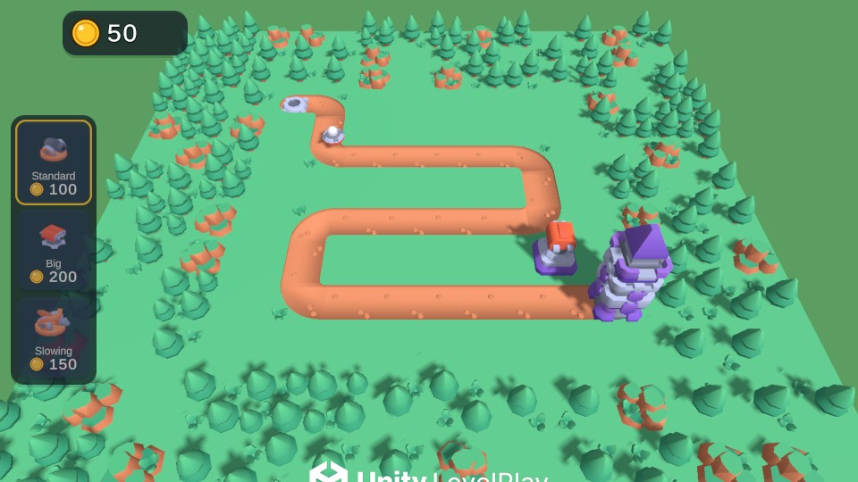
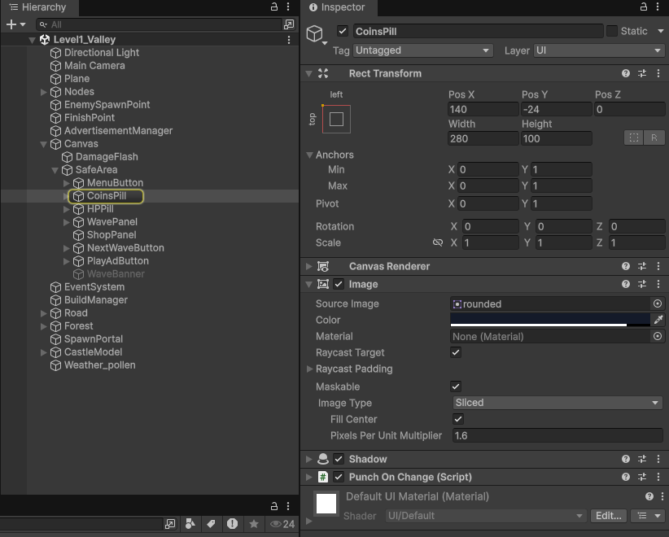
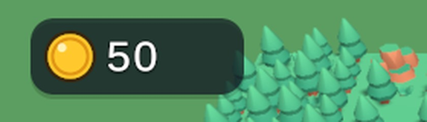
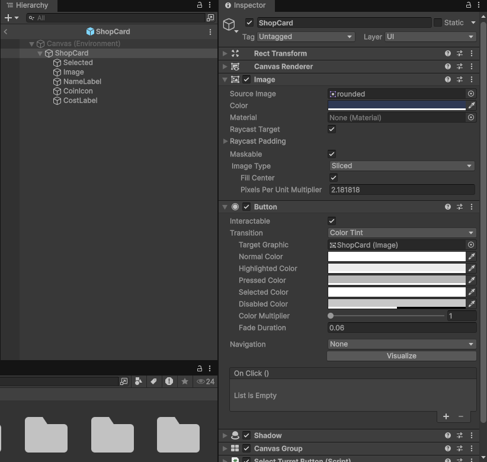
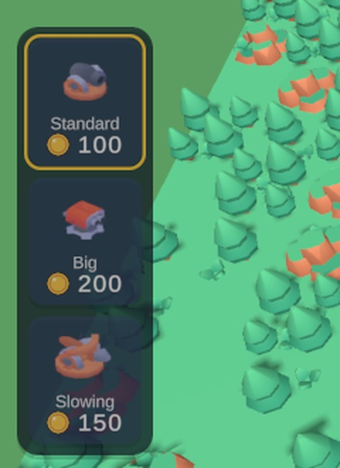

Від примітивів до готової гри
Unity PRO · урок 5 «Самостійна робота. Покращення гри» · основа — твій проєкт після уроку 4


Частина 1 · Моделі
Детальніша версія з поясненнями кожного тайла — у гайді «Нова графіка для Tower Defense». Тут — короткий шлях.
1Завантаж і імпортуй набір Kenney
- kenney.nl/assets/tower-defense-kit → Download, розпакуй.
- Створи
Assets/Kenney/TowerDefenseKit/Modelsі перетягни туди все зModels/FBX formatразом із текоюTextures. - Створи один матеріал
Kenney: Shader Universal Render Pipeline/Lit, у Base Map —colormap.png, Smoothness ≈ 0.15. Усі моделі набору фарбуються ним.


2Вузли стають трав'яними тайлами
- Відкрий префаб Node: Scale = 1, 1, 1; Mesh =
tile; Material =Kenney. - Box Collider: Center 0, 0.3, 0 · Size 1, 0.6, 1. BuildPoint: Position Y = 0.2.
- Тайли мають розмір рівно 1×1 — розстав вузли впритул із прив'язкою до сітки з кроком 1, а на місці дороги лиши порожні клітинки.

3Дорога з тайлів і NavMesh
- Створи порожній
Roadі склади в ньому дорогу зtile-straight,tile-corner-round,tile-spawn-end-round(старт) іtile-end-round(фініш). Повертай тайли по Y на 90°, щоб з'єднати ділянки. - Plane: вимкни лише компонент Mesh Renderer (сам Plane не видаляй — по ньому ходять вороги), Position Y = 0.1.
- Plane → NavMesh Surface → Bake. Синя сітка має бути тільки на дорозі.


4Турелі та вороги
- Турель: у префабі заміни модель основи на
tower-round-bottom-a(Scale 0.8, 0.6, 0.8), а гармату всередині Weapon — наweapon-cannon(для інших турелейweapon-turret,weapon-ballista). Weapon підніми на Y ≈ 0.36. Скрипт, Sphere Collider і шар Ignore Raycast не чіпай. - Ворог: у префабі Enemy видали Mesh Filter і Mesh Renderer, вклади модель
enemy-ufo-a(Scale ≈ 0.55). NavMesh Agent: Radius 0.25, Base Offset 0.15.


5Спавн, замок, ліс і камера
- На старт дороги —
spawn-round. На фініш — замок із частин башти:tower-square-bottom-b→middle-a→top-a→roof-b. Кубу FinishPoint вимкни лише Mesh Renderer. - Навколо поля —
tile-tree,tile-tree-double,tile-tree-quad,tile-rock, повернуті по-різному. - Main Camera: Position 0, 8.6, -7.4 · Rotation X 52 · Background — зелений під колір трави.
- Іконки магазину: з теки
Previewsархіву імпортуйweapon-cannon.pngта інші як Sprite і вкажи їх у полі Icon своїх TurretInfo.

colormap.png. Рожеві — шейдер не URP. Вороги йдуть по траві — перепечи NavMesh (крок 3).Частина 2 · Інтерфейс
6Іконки і заокруглена картинка
Завантаж (правою кнопкою → «Зберегти як») і перетягни в Assets/Sprites/UI:


- Виділи всі картинки → Texture Type = Sprite (2D and UI) → Apply.
- Для
rounded: Sprite Editor → Border = 52 з усіх боків → Apply. Тепер з неї можна зробити панель будь-якого розміру, а кути не розтягнуться.
heart, play і home знадобляться пізніше — для здоров'я замку, кнопки хвилі та меню на уроках 6–8.7Canvas під телефон і якорі
- Canvas → Canvas Scaler: UI Scale Mode = Scale With Screen Size, Reference Resolution = 1920 × 1080, Match = 0.5.
- Кожен елемент прив'яжи до свого краю: Rect Transform → Anchor Presets, затисни Alt і клікни кут. Монети — лівий верхній, магазин — ліворуч по центру.
- Перевір: у вікні Game перемкни розмір на
2400×1080(як телефон) — нічого не має вилізти за край.
8Панель монет
- На Canvas: UI → Image, назви
CoinsPanel. Source Image =rounded, Image Type = Sliced, колір — темно-синій напівпрозорий. Розмір 280 × 100, якір — лівий верхній кут, Pos 140, -24. - Усередину — ще одна Image з
coin, 72 × 72, ліворуч. - Перетягни свій текст монет у панель і постав праворуч від іконки: шрифт Bold, розмір 56, вирівнювання ліворуч.
- У тексті: Material Preset →
LiberationSans SDF - Outline— з'явиться обведення, і число читатиметься на будь-якому фоні.


9Картки магазину
Кнопки магазину створює ShopPanel з префаба — тому змінюємо префаб, і всі кнопки оновляться разом.
- ShopPanel: Image =
rounded(Sliced), темний напівпрозорий; у Vertical Layout Group — Padding 16, Spacing 16. - Відкрий префаб SelectTurretButton. Його Image:
rounded, Sliced, колір#2E3854. - У Button: Transition = Color Tint, Pressed Color — сірий. Кнопка темнішатиме при натисканні.
- Біля ціни додай Image з
coin36 × 36, а CostLabel зсунь праворуч і теж постав йому preset Outline.

rounded і Color Tint.
10Перевір і збери
- Тисни Play: монети в панелі, картки натискаються, турелі будуються.
- Клік по картці не має будувати турель під нею — це ми виправляли на уроці 4.
- Перемкни Game на
2400×1080і на1280×720— усе на місці.
★Для тих, хто встиг
- Підсвітка вибраної турелі: у
ShopPanelзбережи фони кнопок уList<Image>; у слухачі кліку спочатку всім постав звичайний колір, а натиснутій — золотий. - Назва турелі на картці: додай у
TurretInfoполеtitleі текст на картці, який заповнюєSelectTurretButton.SetTurretInfo. - Інші світи: набори Forest / Desert / Dungeon з Asset Store — див. додаткове завдання в гайді Kenney.
Для викладача
Еталон: ~/Robocode/Courses/Unity/TowerDefense2026. Покроковий еталон саме з уроку 4: ~/Robocode/Courses/Unity/TD-Lesson5, тег lesson-05-makeover (меню Robocode → Lesson5 → 01…18). Моделі поверх уроку 8 — тег kenney-art (меню Robocode → Tower Defense → Apply Kenney art), інтерфейс у тому ж стилі — тег ui (рівні з Robocode → Levels → Generate all levels + menu; іконки й заокруглений спрайт малюються кодом у Assets/Sprites/UI).
Продовження після уроків 6–8 (меню рівнів, ефекти): «Меню, рівні та ефекти».